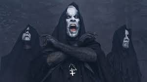
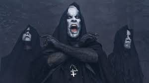

The History Of Heavy Metal
The 2010's
The 2010s does not hold much interest of great importance except one thing. The emergence of a subgenre that started a meme, Djent (Pronounced Jent) Meshuggah pioneered the genre, introducing guitars with too many strings not for show but technical ability. Bands like Behemoth popularized the genre in Europe. Djent takes its name from the hilarious sounds the guitars make during a Djenty breakdown, allow me to demonstrate: Junt-Jun-JunJUn-Junuunjun-junjunt.
 

Tesseract
Mesuggah
Behemoth
FINAL DECADE